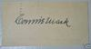

So we’re going to find out on Monday whether or not Dick Allen was elected to the Hall of Fame by the Veterans Committee. Even though I’m young, this has always been an interesting topic for me. My dad is able to tell me stories about how; despite what an awful year 1964 was, how good Dick Allen’s rookie campaign was. I had kind of thought about writing about this for some sort of project of mine, but it never really formulated into anything. However, I thought it would be an appropriate time to bring this up seeing that the Veterans Committee vote is coming up next week.
I always thought, personally, that he should be in the Hall. I read stories about how much of an apparent “dick” he was and how, according to Bill James, he never did anything to help his teams win and therefore, must have been a total cancer. I guess we’ll never know. I wasn’t in the clubhouse before, after or during games. I wasn’t in the dugout. I have to go off what I read and what I have learned.
People will argue that he was a hotdog. Whatever. That is inconsequential to me. What I do know, is that when I look at the numbers, I see a Hall of Famer. People will disagree, as Bill James did. Some people, I’m sure, will agree. Most Phillies fans alive and well in the ‘60’s will probably tell you he should be in the Hall.
The career line of .292/.378/.534 is damn good. He probably wasn’t the best fielder, which doesn’t help. But look at the reverse. Ozzie Smith got into the HOF because of his fielding. Why can’t Dick Allen get in because of his hitting? He slugged over .600 three times, albeit one season was cut short to 250 ABs in ’73. There’s always the argument that his career was not long enough. To those people, I say… why is Sandy Koufax in the Hall of Fame? If he deserved it, I say Dick Allen deserved it.
This is an open thread, and I hope any older posters can share their thoughts. Here's the full text of the Bill James writing on Allen.
And here's an article in defense of Allen by Brad Harris.
So hopefully we have an answer on Monday. And hopefully Dick Allen is going to the Hall of Fame.
Archived


Dick Allen
52 posts
• Page 1 of 3 • 1, 2, 3
Dick Allen
 by CFP » Sat Dec 06, 2008 00:33:14
by CFP » Sat Dec 06, 2008 00:33:14
-

CFP - Plays the Game the Right Way

- Posts: 30576
- Joined: Thu Dec 28, 2006 20:01:49
- Location: Everybody knows this is nowhere
 by DiamondDerby » Sat Dec 06, 2008 00:47:42
by DiamondDerby » Sat Dec 06, 2008 00:47:42
I'll back you up on Allen. He belongs there. One of the top 5 feared hitters in baseball for several years. I always liked him, but then I liked Muhammed Ali and Malcom X also. Like them, he stood up to a white establishment in his own way and yet had decency and did not hate whites, despite the perception that he did. Good man, Allen, and great player.
riverrun past eve and adams
- DiamondDerby
- There's Our Old Friend

- Posts: 369
- Joined: Thu Jan 04, 2007 17:14:24
- Location: Durham, NC
 by Ramon Gris » Sat Dec 06, 2008 03:07:50
by Ramon Gris » Sat Dec 06, 2008 03:07:50
The one the second article referenced was pretty interesting, too.
http://www.whitesoxinteractive.com/rwas ... 11&id=2065
http://www.whitesoxinteractive.com/rwas ... 11&id=2065
-

Ramon Gris - BSG MVP

- Posts: 3511
- Joined: Sat Dec 30, 2006 01:09:27
- Location: Out of the loop
 by philliesphhan » Sat Dec 06, 2008 04:06:34
by philliesphhan » Sat Dec 06, 2008 04:06:34
Ramon Gris wrote:The one the second article referenced was pretty interesting, too.
http://www.whitesoxinteractive.com/rwas ... 11&id=2065
I like that Bill James makes fun of his defense at third base in a book called "Total Baseball" yet seems ignorant of the fact that he had never played third base before his rookie season in the majors. Actually, James is the one who sounds like a dick.
"My hip is fucked up. I'm going to Africa for two weeks."
-

philliesphhan - Plays the Game the Right Way
- Posts: 36348
- Joined: Sun Jan 28, 2007 14:37:22
- Location: the corner of 1st and 1st
 by Ramon Gris » Sat Dec 06, 2008 04:08:33
by Ramon Gris » Sat Dec 06, 2008 04:08:33
philliesphhan wrote:Ramon Gris wrote:The one the second article referenced was pretty interesting, too.
http://www.whitesoxinteractive.com/rwas ... 11&id=2065
I like that Bill James makes fun of his defense at third base in a book called "Total Baseball" yet seems ignorant of the fact that he had never played third base before his rookie season in the majors. Actually, James is the one who sounds like a dick.
He really does.
-
Ramon Gris - BSG MVP
- Posts: 3511
- Joined: Sat Dec 30, 2006 01:09:27
- Location: Out of the loop
 by ConnieMack » Sat Dec 06, 2008 11:53:07
by ConnieMack » Sat Dec 06, 2008 11:53:07
Richie Allen was one of the hitters that pitchers of his generation did not want to face........his power/average/speed was on par with the best of the "sluggers " of his time.
Regarded as one of the best baserunners going from 1st to 3rd.
ROY/MVP .292 .378 .534 and an OPS+ of 156 , those are better stats than a lot of guys already in the HOF.
Whenever you read interviews of teamates or Managers Allen played with, to a man they all say Allen was a positive influence in the clubhouse and with younger players.
Did the press contribute a lot to the negative conotations on Allen ?
Goose Gossage, squinting into the Cooperstown sunlight on his induction day, called Dick Allen "the greatest teammate" he'd ever had.
I watched him play as a young kid in '64 , times were different. He put up with a lot of abuse, but still played the game hard to win.
Probably will not get in, I doubt the " revamped " veterans committee ever votes anyone in as it is constructed now.
Regarded as one of the best baserunners going from 1st to 3rd.
ROY/MVP .292 .378 .534 and an OPS+ of 156 , those are better stats than a lot of guys already in the HOF.
Whenever you read interviews of teamates or Managers Allen played with, to a man they all say Allen was a positive influence in the clubhouse and with younger players.
Did the press contribute a lot to the negative conotations on Allen ?
Goose Gossage, squinting into the Cooperstown sunlight on his induction day, called Dick Allen "the greatest teammate" he'd ever had.
I watched him play as a young kid in '64 , times were different. He put up with a lot of abuse, but still played the game hard to win.
Probably will not get in, I doubt the " revamped " veterans committee ever votes anyone in as it is constructed now.
-

ConnieMack - There's Our Old Friend
- Posts: 189
- Joined: Wed Jan 03, 2007 00:13:03

 by 21McBride » Sat Dec 06, 2008 13:40:11
by 21McBride » Sat Dec 06, 2008 13:40:11
Anybody ever hear the song "Letters in the Dirt" by Chuck Brodsky? I had read about it in grad school when I did a paper on the Phils' historic treatment of black players and finally downloaded it from itunes. It's worth checking out.
here's the lyrics, the only instrumentation is an acoustic guitar:
the throwaway Santa getting hit by a snowball line shouldn't be held against him, Brodsky wrote a whole song that portrays the incident scary accurately. It's called The Great Santa Snowball Debacle of 1968
It would really cap off the year to get Dick Allen in the HOF.
here's the lyrics, the only instrumentation is an acoustic guitar:
Me & you, we never booed Richie Allen
I never understood why people did
He hit a homer every time he stepped up to the plate
That’s what I remember as a kid
Richie in the field out there by first base
The target of some mighty foul words
With his shoes he’d scrawl between the pitched
“B-O-O” in great big letters in the dirt
Philly fans, they’ve been known to get nasty
When Joe must go, they’ll run him out of town
I saw Santa get hit by a snowball
And then get hit again when he was down
Me & you, we never booed Richie Allen
Even if he did sometimes strike out
I was too young to read the papers
To know what all that booing was about
That big collapse of ‘64 was ugly
They blew a lead of 6 and one-half games with 12 to play
Some might say their fans were justifiably angry
World Series tickets printed up in vain
Philly fans, they’ve been known to get nasty
When Joe must go, they’ll run him out of town
I saw Santa get hit by a snowball
And then get hit again when he was down
Going back to old Connie Mack Stadium
You teaching me the rules of the game
We root-root-rooted for the home team
Thhose other people shoulda been ashamed
This was before the days of the million dollar contracts
Before the days of the artificial grass
He stood a bit outside the lines which made him fair game for those times
Richie Allen never kissed a white man’s ass
Me & you, we never booed Richie Allen
No, we’d pound our mitts & we’d yell, “We want a hit”
How could they call a guy a bum after he’d just hit a home run?
That didn’t make any sense to a kid
Now I’ve since found out all these days later
Now I know alot more than I did
And if back then you knew, Daddy, why all those other people booed...
Thanks for letting me have my heroes as a kid
the throwaway Santa getting hit by a snowball line shouldn't be held against him, Brodsky wrote a whole song that portrays the incident scary accurately. It's called The Great Santa Snowball Debacle of 1968
It would really cap off the year to get Dick Allen in the HOF.
"Chase Utley You are the Man"
-Harry Kalas
-Harry Kalas
-

21McBride - BSG MVP
- Posts: 8396
- Joined: Thu Dec 28, 2006 21:25:58
 by Philly the Kid » Sat Dec 06, 2008 13:42:15
by Philly the Kid » Sat Dec 06, 2008 13:42:15
<<<<< well, you all know where I stand on the topic. This has come up several times before on the old list and this board. Things can be said on both sides. I do think the "personality" thing should be a non-issue. Many in their 20's today can't understand the era, the times. He really wasn't a me me me guy or a cancer, just a proud confident guy who really didn't want to deal with racism. Philly pinned its hopes and then blame on him with 64. The best player they had had since Chuck Klein, their first African American star player -- had they won the WS that year, a lot of things would have gone differently. I read his auto-biography some years ago called "Crash", and he spun some stuff around his alcohol and smoking - remember too, that the Phils ownership and management of that era was really backward. The Phils were one of hte last teams to integrate.
In an era that still included Hank Aaron, Willie Mays, Mickey Mantle, Harmon Killebrew, Willie McCovey, Orlando Cepeda, Reggie Jackson, Billy Williams, Willie Stargell, John Bench -- there's no one of that era that would tell you that Allen wasn't as feared as any of em....
His best numbers were relatively short span, he didn't have the cumulative #'s, he was hurt a few seasons and had a rapid decline at the end, but there's enough there to justify it.
I don't think there is enough overall support for him to get in, he'll get some votes and fall somewhat short. The HOF is getting crowded in some people's opinions and given all the big #s of the 90's and 00's, they aren't going to put a guy like Allen in there. He was never part of a WS winner. He had ROY, MVP, some great slugging #'s, was the highest paid player in Baseball in 73, was a great athelete, good speed, smart player o nthe diamond -- and not nearly the bad guy the media made him out to be. He was mellow compared to say Albert Belle or even Sheffield.
In my mind, he's a HOFer and I'll always feel that way. F*** Bill James, who essentially tanked him with the article some years ago...
In an era that still included Hank Aaron, Willie Mays, Mickey Mantle, Harmon Killebrew, Willie McCovey, Orlando Cepeda, Reggie Jackson, Billy Williams, Willie Stargell, John Bench -- there's no one of that era that would tell you that Allen wasn't as feared as any of em....
His best numbers were relatively short span, he didn't have the cumulative #'s, he was hurt a few seasons and had a rapid decline at the end, but there's enough there to justify it.
I don't think there is enough overall support for him to get in, he'll get some votes and fall somewhat short. The HOF is getting crowded in some people's opinions and given all the big #s of the 90's and 00's, they aren't going to put a guy like Allen in there. He was never part of a WS winner. He had ROY, MVP, some great slugging #'s, was the highest paid player in Baseball in 73, was a great athelete, good speed, smart player o nthe diamond -- and not nearly the bad guy the media made him out to be. He was mellow compared to say Albert Belle or even Sheffield.
In my mind, he's a HOFer and I'll always feel that way. F*** Bill James, who essentially tanked him with the article some years ago...
-

Philly the Kid - Space Cadet

- Posts: 19434
- Joined: Sat Jun 09, 2007 13:25:27
 by ConnieMack » Sat Dec 06, 2008 13:54:14
by ConnieMack » Sat Dec 06, 2008 13:54:14
That's a neat song.
Here's a link to listen to it, upper right corner to play.
http://www.last.fm/music/Chuck+Brodsky/_/Letters+In+The+Dirt
Here's a link to listen to it, upper right corner to play.
http://www.last.fm/music/Chuck+Brodsky/_/Letters+In+The+Dirt
-
ConnieMack - There's Our Old Friend
- Posts: 189
- Joined: Wed Jan 03, 2007 00:13:03
 by dajafi » Sat Dec 06, 2008 14:00:19
by dajafi » Sat Dec 06, 2008 14:00:19
I'm slightly too young to remember Allen--my first seasons watching the Phils were 1978/79, and I think he hung 'em up two years before that. But I've found the guy fascinating ever since I first read about him as a kid.
I hope he gets in; it seems like he's unfairly held to a standard of conduct very different than what we see in pro sports today, and his flaws and dumb actions strike me as more humanizing than alienating. Albert Belle he ain't.
I hope he gets in; it seems like he's unfairly held to a standard of conduct very different than what we see in pro sports today, and his flaws and dumb actions strike me as more humanizing than alienating. Albert Belle he ain't.
-

dajafi - Moderator / BSG MVP
- Posts: 24567
- Joined: Thu Dec 28, 2006 20:03:18
- Location: Brooklyn
 by smitty » Sat Dec 06, 2008 15:56:25
by smitty » Sat Dec 06, 2008 15:56:25
philliesphhan wrote:I like that Bill James makes fun of his defense at third base in a book called "Total Baseball" yet seems ignorant of the fact that he had never played third base before his rookie season in the majors. Actually, James is the one who sounds like a dick.Ramon Gris wrote:The one the second article referenced was pretty interesting, too.http://www.whitesoxinteractive.com/rwas ... 11&id=2065
Bill James did not write Total Baseball. That was John Thorn. The James book is called The Politics of Glory. I have that book and just read the part regarding Allen. He does not make fun of his fielding.James wrote that Allen was a "great hitter, an excellent baserunner and an OK fielder."
He writes that the most similar player to him is Johnny Mize (who is in the Hall of Fame and who was a great hitter).
James writes that Allen was charming and a manipulator and used these skills to divide every team he played for into pro-Allen and anti-Allen camps. I don't know how true that is. He writes that Allen was an alcoholic, was irresposnsible and vindictive. Moody, self-absorbed with a casual approach to the game -- a jerk.
He also wrote that Allen did less to help his teams than any player in history.
I think there is no doubt that Allen was charming. Lots and lots of people who knew him really liked him. Whether he was a manipulator is or not is much more doubtful. He did drink a lot -- he would stop off at bars on the way to the ballpark -- one of the reasons he was late a lot. There are, however, plenty of Hall of Famers who did that.
For good or ill, Allen was very much an individual. Kinda like Ted Williams in some ways. Disliked greatly by the press and the fans. Allen was well liked by many of those who actually got to know him though, near as I can tell. Whitey Ashburn, Mike Schmidt and Dave Cash actually went out to meet Allen to try to convince him to come back to baseball as a Phillies in 1975. When he did come back, he was cheered mightily by the fans at the Vet (I was there -- not his very first game, but early on). They cheered even louder when he ripped a single up the middle and of course, booed him when he struck out.
It is absolutely untrue that he didn't help his teams win. The 1964 Phillies weren't a good team if he wasn't on it -- and he was just a rookie. He did more to make that team a 90 win team than anyone I'd guess. He also carried a very bad '72 White Sox team to 87 wins.
The Frank Thomas incident happened very early in his career (1965). Thomas was kind of a big, jerky guy who no one really liked. But the Phils handled the thing very badly and it appeared that Allen was the bad guy in the affair. Almost certainly, Thomas was much more to blame for it. But the press didn't paint it that way and the public didn't know much else.
Reading Crash was interesting (thanks so much Bucky). Allen, when he is quoted in the book, sounds a lot like PTK to me for some reason.
Anyway, Allen was certainly a great hitter. He also was surrounded by contoroversy throughout much of his career. He was hurt a lot. He "retired" a few times. He didn't much care for authority. He did work very hard when he was at the ball park. He was traded a lot in the prime years of his career for not much. He was the key guy on two teams that vastly outperformed their capabilities and he was one of the best hitters of his era.
I don't think there is an easy answer to this one. The truth of the matter is somehwere betwen the James view and the Wright view.
If you asked folks back in 1978 if Allen was a Hall of Famer, I doubt if many would say yes. Bill James was one of the first to actually write that Allen belonged there. It looks like after 15 years, James did some reading up on Allen when he was a Phillie and a White Sox. He was very much influenced, it appears, by a quote from some guy in the Royals organization who didn't want Dick Allen on his team in 1974 when the Sox were trying to trade him.
-

smitty - BSG MVP
- Posts: 45450
- Joined: Sat Dec 30, 2006 03:00:27
- Location: Federal Way, WA --Spursville
 by Philly the Kid » Sat Dec 06, 2008 23:06:37
by Philly the Kid » Sat Dec 06, 2008 23:06:37
smitty wrote:philliesphhan wrote:I like that Bill James makes fun of his defense at third base in a book called "Total Baseball" yet seems ignorant of the fact that he had never played third base before his rookie season in the majors. Actually, James is the one who sounds like a dick.Ramon Gris wrote:The one the second article referenced was pretty interesting, too.http://www.whitesoxinteractive.com/rwas ... 11&id=2065
Bill James did not write Total Baseball. That was John Thorn. The James book is called The Politics of Glory. I have that book and just read the part regarding Allen. He does not make fun of his fielding.James wrote that Allen was a "great hitter, an excellent baserunner and an OK fielder."
He writes that the most similar player to him is Johnny Mize (who is in the Hall of Fame and who was a great hitter).
James writes that Allen was charming and a manipulator and used these skills to divide every team he played for into pro-Allen and anti-Allen camps. I don't know how true that is. He writes that Allen was an alcoholic, was irresposnsible and vindictive. Moody, self-absorbed with a casual approach to the game -- a jerk.
He also wrote that Allen did less to help his teams than any player in history.
I think there is no doubt that Allen was charming. Lots and lots of people who knew him really liked him. Whether he was a manipulator is or not is much more doubtful. He did drink a lot -- he would stop off at bars on the way to the ballpark -- one of the reasons he was late a lot. There are, however, plenty of Hall of Famers who did that.
For good or ill, Allen was very much an individual. Kinda like Ted Williams in some ways. Disliked greatly by the press and the fans. Allen was well liked by many of those who actually got to know him though, near as I can tell. Whitey Ashburn, Mike Schmidt and Dave Cash actually went out to meet Allen to try to convince him to come back to baseball as a Phillies in 1975. When he did come back, he was cheered mightily by the fans at the Vet (I was there -- not his very first game, but early on). They cheered even louder when he ripped a single up the middle and of course, booed him when he struck out.
It is absolutely untrue that he didn't help his teams win. The 1964 Phillies weren't a good team if he wasn't on it -- and he was just a rookie. He did more to make that team a 90 win team than anyone I'd guess. He also carried a very bad '72 White Sox team to 87 wins.
The Frank Thomas incident happened very early in his career (1965). Thomas was kind of a big, jerky guy who no one really liked. But the Phils handled the thing very badly and it appeared that Allen was the bad guy in the affair. Almost certainly, Thomas was much more to blame for it. But the press didn't paint it that way and the public didn't know much else.
Reading Crash was interesting (thanks so much Bucky). Allen, when he is quoted in the book, sounds a lot like PTK to me for some reason.
Anyway, Allen was certainly a great hitter. He also was surrounded by contoroversy throughout much of his career. He was hurt a lot. He "retired" a few times. He didn't much care for authority. He did work very hard when he was at the ball park. He was traded a lot in the prime years of his career for not much. He was the key guy on two teams that vastly outperformed their capabilities and he was one of the best hitters of his era.
I don't think there is an easy answer to this one. The truth of the matter is somehwere betwen the James view and the Wright view.
If you asked folks back in 1978 if Allen was a Hall of Famer, I doubt if many would say yes. Bill James was one of the first to actually write that Allen belonged there. It looks like after 15 years, James did some reading up on Allen when he was a Phillie and a White Sox. He was very much influenced, it appears, by a quote from some guy in the Royals organization who didn't want Dick Allen on his team in 1974 when the Sox were trying to trade him.
It's hard to me objective about your favorite all-time player.
All I can say is, that there is something I refer to as "HOF Talent". Allen had it. He was a slugger of the first order. When he was on, he was in the upper echelon of Baseball sluggers. After his big year with the White Sox in 72, he got what at the time was the largest contract every in Baseball. Sounds to me, even at that point, whatever the view of him as a person -- he was considered an elite player. I'd take a young healthy Allen on my team in 1930, 1950, 1970 or 2010.
The only Phillies hitters in his class are:
Schmidt
Howard
Klein
I will say again, if Gene Mauch and bad luck don't f up 64, and they make the WS let alone win it -- the entire story of Allen is very VERY different. The Frank White thing was a miserable episode and Allen was angry at the Phils for not letting him speak to the media and explain what happened. That and 64 turned the fans against him. Not all, but many. The same ones ready to drive Donovan out of town now.
-
Philly the Kid - Space Cadet
- Posts: 19434
- Joined: Sat Jun 09, 2007 13:25:27

 by Barry Jive » Sun Dec 07, 2008 02:35:06
by Barry Jive » Sun Dec 07, 2008 02:35:06
I've been on the fence, but the more I read, the more convinced I am that he's a HOFer.
The worst part of Bill James' article, in my opinion, is his damnation of Allen's alcoholism. I understand that's an easy spot to target, but if it's clear that someone has a personal problem, you don't use that as as starting point for excluding them from the HOF (unless it leads to breaking league rules, as it did Pete Rose).
Here's a couple questions I've been asking myself in reference to Dick Allen. The first: Reading negative things about him reminds me of Terrell Owens, who is the most well-documented clubhouse cancer I've ever witnessed as a sports fan. Given that, do I think his talent exceeds those issues enough that he's still a HOF player? Granted, it's the NFL so it's a bit different, but there's absolutely zero doubt in my mind that Terrell Owens deserves to be in the Hall of Fame when he retires from the NFL. He's one of the top three wide receivers I've ever seen play.
To transfer that point, Dick Allen is, by all accounts, one of the best hitting first basemen ever to play the game. Given everything we know about how valuable his slugging numbers were at a time when teams could regularly scrape out wins by scoring a single run, Dick Allen was a giant of baseball.
No amount of clubhouse issues could devalue his talent to the point that he's not a HOFer. He could make every man on the team hate the other 24 guys, the manager, the trainer, the owner, the fans and the freaking mascot, and still, his alleged cancerous effect would still not devalue his ability to single-handedly win games for the average teams he played for.
The second question I've been asking myself, in reference to his personal issues with the teams he played for and the cities who watched him play, is: How did his personal problems impact his ability to physically perform in games? That is, did he do so much that he limited his own playing time, his own quality of play, or any other players' value?
The answer to those questions brings me back to Pete Rose, Joe Jackson, Hal Chase, and the like. There's no question those first two guys would be in the HOF if they weren't banned from baseball. Hal Chase is questionable, but still, there's an argument. These are the guys who broke rules. Dick Allen didn't. There's no reason to punish him on character when he didn't do anything to give the MLB or his own teams a reason to punish him on character. Pete FREAKING ROSE! The hit king! Was banned from baseball! Nothing would keep MLB from banning a superstar if he broke the rules. Dick Allen clearly didn't.
The most notable instance in which he cost himself playing time was when he rightly earned a 26-game suspension because he was found driving erratically and was late to a game (presumably because of drinking). He also got into a fight with Frank Thomas, a fight everyone watching described as Thomas' fault. Big freaking deal.
The 26 games are the only place you can blame Allen for a character issue that impacted his play. And it begins and ends with his alcoholism. That's it. You vote in Dick Allen because he's one of the best hitters of all time, or you exclude him because he was an alcoholic. That argument's flimsiness is only rivaled by the anti-Blyleven argument. It comes down to unseen bias and ignorance.
A side note: I used to love Bill James. I had no idea his subjective ranking had such a huge impact on his list. It calls into question everything I'd believed about his fairness. I respect him for what he's done for sabermetrics, and even moreso I respect him for his sheer knowledge, obsession, and borderline addiction in reference to learning the stories and the history of the game. He's a man who's helped to make me love the game more than I thought I could. And yet, his refusal to consider an alternate side of the Dick Allen story makes me wonder who else he's buried on an irrational grudge. Maybe some other guys who a dumbass KC Royals general manager didn't like.
My suspicion is that, just from picking up on some spiels in his 2003 edition of the Historical Baseball Abstract, he has a Puritanical issue with alcohol, and this would stand to follow with his opinion of Dick Allen. Dude's got a problem. You know who else had problems? Mickey fucking Mantle. Bury him, why don't you?
The worst part of Bill James' article, in my opinion, is his damnation of Allen's alcoholism. I understand that's an easy spot to target, but if it's clear that someone has a personal problem, you don't use that as as starting point for excluding them from the HOF (unless it leads to breaking league rules, as it did Pete Rose).
Here's a couple questions I've been asking myself in reference to Dick Allen. The first: Reading negative things about him reminds me of Terrell Owens, who is the most well-documented clubhouse cancer I've ever witnessed as a sports fan. Given that, do I think his talent exceeds those issues enough that he's still a HOF player? Granted, it's the NFL so it's a bit different, but there's absolutely zero doubt in my mind that Terrell Owens deserves to be in the Hall of Fame when he retires from the NFL. He's one of the top three wide receivers I've ever seen play.
To transfer that point, Dick Allen is, by all accounts, one of the best hitting first basemen ever to play the game. Given everything we know about how valuable his slugging numbers were at a time when teams could regularly scrape out wins by scoring a single run, Dick Allen was a giant of baseball.
No amount of clubhouse issues could devalue his talent to the point that he's not a HOFer. He could make every man on the team hate the other 24 guys, the manager, the trainer, the owner, the fans and the freaking mascot, and still, his alleged cancerous effect would still not devalue his ability to single-handedly win games for the average teams he played for.
The second question I've been asking myself, in reference to his personal issues with the teams he played for and the cities who watched him play, is: How did his personal problems impact his ability to physically perform in games? That is, did he do so much that he limited his own playing time, his own quality of play, or any other players' value?
The answer to those questions brings me back to Pete Rose, Joe Jackson, Hal Chase, and the like. There's no question those first two guys would be in the HOF if they weren't banned from baseball. Hal Chase is questionable, but still, there's an argument. These are the guys who broke rules. Dick Allen didn't. There's no reason to punish him on character when he didn't do anything to give the MLB or his own teams a reason to punish him on character. Pete FREAKING ROSE! The hit king! Was banned from baseball! Nothing would keep MLB from banning a superstar if he broke the rules. Dick Allen clearly didn't.
The most notable instance in which he cost himself playing time was when he rightly earned a 26-game suspension because he was found driving erratically and was late to a game (presumably because of drinking). He also got into a fight with Frank Thomas, a fight everyone watching described as Thomas' fault. Big freaking deal.
The 26 games are the only place you can blame Allen for a character issue that impacted his play. And it begins and ends with his alcoholism. That's it. You vote in Dick Allen because he's one of the best hitters of all time, or you exclude him because he was an alcoholic. That argument's flimsiness is only rivaled by the anti-Blyleven argument. It comes down to unseen bias and ignorance.
A side note: I used to love Bill James. I had no idea his subjective ranking had such a huge impact on his list. It calls into question everything I'd believed about his fairness. I respect him for what he's done for sabermetrics, and even moreso I respect him for his sheer knowledge, obsession, and borderline addiction in reference to learning the stories and the history of the game. He's a man who's helped to make me love the game more than I thought I could. And yet, his refusal to consider an alternate side of the Dick Allen story makes me wonder who else he's buried on an irrational grudge. Maybe some other guys who a dumbass KC Royals general manager didn't like.
My suspicion is that, just from picking up on some spiels in his 2003 edition of the Historical Baseball Abstract, he has a Puritanical issue with alcohol, and this would stand to follow with his opinion of Dick Allen. Dude's got a problem. You know who else had problems? Mickey fucking Mantle. Bury him, why don't you?
no offense but you are everything that's wrong with America
-

Barry Jive - Plays the Game the Right Way
- Posts: 37856
- Joined: Wed Dec 26, 2007 21:53:43
- Location: I'm Doug, solamente Doug.
 by Philly the Kid » Sun Dec 07, 2008 16:43:28
by Philly the Kid » Sun Dec 07, 2008 16:43:28
Barry Jive wrote:I've been on the fence, but the more I read, the more convinced I am that he's a HOFer.
The worst part of Bill James' article, in my opinion, is his damnation of Allen's alcoholism. I understand that's an easy spot to target, but if it's clear that someone has a personal problem, you don't use that as as starting point for excluding them from the HOF (unless it leads to breaking league rules, as it did Pete Rose).
Here's a couple questions I've been asking myself in reference to Dick Allen. The first: Reading negative things about him reminds me of Terrell Owens, who is the most well-documented clubhouse cancer I've ever witnessed as a sports fan. Given that, do I think his talent exceeds those issues enough that he's still a HOF player? Granted, it's the NFL so it's a bit different, but there's absolutely zero doubt in my mind that Terrell Owens deserves to be in the Hall of Fame when he retires from the NFL. He's one of the top three wide receivers I've ever seen play.
To transfer that point, Dick Allen is, by all accounts, one of the best hitting first basemen ever to play the game. Given everything we know about how valuable his slugging numbers were at a time when teams could regularly scrape out wins by scoring a single run, Dick Allen was a giant of baseball.
No amount of clubhouse issues could devalue his talent to the point that he's not a HOFer. He could make every man on the team hate the other 24 guys, the manager, the trainer, the owner, the fans and the freaking mascot, and still, his alleged cancerous effect would still not devalue his ability to single-handedly win games for the average teams he played for.
The second question I've been asking myself, in reference to his personal issues with the teams he played for and the cities who watched him play, is: How did his personal problems impact his ability to physically perform in games? That is, did he do so much that he limited his own playing time, his own quality of play, or any other players' value?
The answer to those questions brings me back to Pete Rose, Joe Jackson, Hal Chase, and the like. There's no question those first two guys would be in the HOF if they weren't banned from baseball. Hal Chase is questionable, but still, there's an argument. These are the guys who broke rules. Dick Allen didn't. There's no reason to punish him on character when he didn't do anything to give the MLB or his own teams a reason to punish him on character. Pete FREAKING ROSE! The hit king! Was banned from baseball! Nothing would keep MLB from banning a superstar if he broke the rules. Dick Allen clearly didn't.
The most notable instance in which he cost himself playing time was when he rightly earned a 26-game suspension because he was found driving erratically and was late to a game (presumably because of drinking). He also got into a fight with Frank Thomas, a fight everyone watching described as Thomas' fault. Big freaking deal.
The 26 games are the only place you can blame Allen for a character issue that impacted his play. And it begins and ends with his alcoholism. That's it. You vote in Dick Allen because he's one of the best hitters of all time, or you exclude him because he was an alcoholic. That argument's flimsiness is only rivaled by the anti-Blyleven argument. It comes down to unseen bias and ignorance.
A side note: I used to love Bill James. I had no idea his subjective ranking had such a huge impact on his list. It calls into question everything I'd believed about his fairness. I respect him for what he's done for sabermetrics, and even moreso I respect him for his sheer knowledge, obsession, and borderline addiction in reference to learning the stories and the history of the game. He's a man who's helped to make me love the game more than I thought I could. And yet, his refusal to consider an alternate side of the Dick Allen story makes me wonder who else he's buried on an irrational grudge. Maybe some other guys who a dumbass KC Royals general manager didn't like.
My suspicion is that, just from picking up on some spiels in his 2003 edition of the Historical Baseball Abstract, he has a Puritanical issue with alcohol, and this would stand to follow with his opinion of Dick Allen. Dude's got a problem. You know who else had problems? Mickey $#@! Mantle. Bury him, why don't you?
Long post dude...
Comparing Allen to banned guys makes no sense. Whatever he was or wasn't to team mates he wasn't someone like TO. He had a lot put on him in 64, the entire hopes and dreams of a city. AND they were tough on Schmidt too until 1980. I remember many many conversations where people wanted to trade Michael Jack for George Brett until 1980.
-
Philly the Kid - Space Cadet
- Posts: 19434
- Joined: Sat Jun 09, 2007 13:25:27
 by Bakestar » Sun Dec 07, 2008 16:48:12
by Bakestar » Sun Dec 07, 2008 16:48:12
FWIW, James LOVES Mickey Mantle and may actually overrate him a little bit (which is hard because Mantle was friggin' awesome).
And if anyone would have a reason to irrationally hate a Yankee, it'd be an erstwhile Royals fan / current Red Sox employee.
And if anyone would have a reason to irrationally hate a Yankee, it'd be an erstwhile Royals fan / current Red Sox employee.
Foreskin stupid
-

Bakestar - BSG MVP
- Posts: 14709
- Joined: Thu Dec 28, 2006 17:57:53
- Location: Crane Jackson's Fountain Street Theatre
 by Philly the Kid » Sun Dec 07, 2008 16:49:07
by Philly the Kid » Sun Dec 07, 2008 16:49:07
Bakestar wrote:FWIW, James LOVES Mickey Mantle and may actually overrate him a little bit (which is hard because Mantle was friggin' awesome).
And if anyone would have a reason to irrationally hate a Yankee, it'd be an erstwhile Royals fan / current Red Sox employee.
And he drank himself to death...
-
Philly the Kid - Space Cadet
- Posts: 19434
- Joined: Sat Jun 09, 2007 13:25:27
 by Bakestar » Sun Dec 07, 2008 16:53:44
by Bakestar » Sun Dec 07, 2008 16:53:44
Philly the Kid wrote:Bakestar wrote:FWIW, James LOVES Mickey Mantle and may actually overrate him a little bit (which is hard because Mantle was friggin' awesome).
And if anyone would have a reason to irrationally hate a Yankee, it'd be an erstwhile Royals fan / current Red Sox employee.
And he drank himself to death...
Not to mention artificially shortening and diminishing his career due to the drinks and the related jackassery.
Foreskin stupid
-
Bakestar - BSG MVP
- Posts: 14709
- Joined: Thu Dec 28, 2006 17:57:53
- Location: Crane Jackson's Fountain Street Theatre
 by smitty » Sun Dec 07, 2008 18:11:07
by smitty » Sun Dec 07, 2008 18:11:07
Barry: Yours is a great post and really got me thinking about this issue.
Not sure where you get this. Here's what he wrote:
"But that’s not the issue. Allen was jerk; that’s not the issue, either. There are a lot of jerks in the Hall of Fame, white and black. There are irresponsible people in the Hall of Fame, and there are alcoholics in theHall of Fame. That’s not the issue"
James doesn't hold his problem with alcohol against him. He writes about alcoholic players and managers all the time. I don't recall him being all that twisted up regarding players and managers with alcohol problems. There have been hundreds of them in baseball history.
James has very strong opinions and he tends to be hyperbolic at times (Rudy Seanez is the worst prospect of all time -- he wrote that many years ago and Seanez went on to have a decent and very long career). His reason for writing that Allen is not a Hall of Famer is because he thinks Allen prevnted his teams from winning by dividing every clubhouse he was a part of. I disagree with him there. The '64 and '72 teams he was part of are two examples of he being responsible for turning 2nd division teams into strong contenders.
This is really the crux of the biscuit. The first part of your entry here is without question. The second is more of a problem. It's something we can't measure. But guys who disrupt clubhouses and fight with their managers and divide teams almost certainly hurt their teams. I'm convinced of that. This isn't Strat-OMatic (Allen is absolutely a Strat-O-Matic HOFamer). Individual players can certainly hurt their teams with off field shenannigans.
Hal Chase is a prime example and you can pretty much prove it in his case. You can't prove it nearly as easily in the case of Dick Allen. The only good teams Allen ever played for were probably the '75 and '76 Phillies and they won their division and won 100 + games in '76. He didn't hit well in '75 and he hit very well in '76 but missed a lot of the season. But he was a pretty good contributor to their success. He was gone in '77 and the team dind't get better or anything.
Allen's teams in St. Louis and LA didn't have enough pitching to be really good. You can't blame Allen for that. I think James puts a lot of stock in how those two teams didn't get any better after he joined them and both improved after he left. But that was due, it looks like to much improved pitching.
It's also very likely he took that Joe Burke's comment more seriously than necessary.
This is another sticky question. Allen absolutely hurt his hand very badly while he said he was pushing an old car of his. His hand went through the headlight and was very badly mangled. Was that because he was drinking? Was the pushing the car story bullpoop and was there a more sordid cause for his injury? We'll never know for sure. But since we don't know, there is no reason to penalize him for it.
On the other hand, Allen did get hurt a lot. And he rarely if ever did what the team wanted him to do to rehab and recover. There were always stories that he was faking injuries or exaggerating them to "get back" at his manager or GM or in order to force a trade or something.
Again, it's very hard to say how much his personality or personal weaknesses caused the problems he had. I do know whenever he was hurt, it was big news and there was always controversy surrounding them.
James isn't arguing that Allen's alcohol problems caused all of his problems. Allen was a guy who "danced to a different drummer" to quote Gene Mauch. He was a guy who didn't get along with any authority figure. James believes that this hurt his teams. I think you can make an argument that it did. But it's a tough one to prove. And you CAN prove that Allen absolutely made contenders out of two teams that were not much good without him in the lineup and a good analysis might very well prove he did the same for a few of his other teams. The one time he was added to a good team, that team won 100 + games.
I don't think you need to toss James aside because he is influenced by personal bias. He is like all of us. Everyone has biases that influence their judgment. Look at the way the Phils' ownership and front office has been pilloried for their many decisions because "they don't care about winning." Yet they are the WFCs.
Ruben Amaro is smug and condescending. He will not be cut any slack on this here board. Everyone has biases and holds irrational grudges. James does so in a big way. He always has let his personal biases influence his judgment. I'm pretty sure we all do.
Even though we have really cool saber numbers and B-P stuff to look at and study we will always be influenced by our own human biases. None of the pure number systems are perfect. Nor are the people using them.
Barry Jive wrote:The worst part of Bill James' article, in my opinion, is his damnation of Allen's alcoholism. I understand that's an easy spot to target, but if it's clear that someone has a personal problem, you don't use that as as starting point for excluding them from the HOF (unless it leads to breaking league rules, as it did Pete Rose).
Not sure where you get this. Here's what he wrote:
"But that’s not the issue. Allen was jerk; that’s not the issue, either. There are a lot of jerks in the Hall of Fame, white and black. There are irresponsible people in the Hall of Fame, and there are alcoholics in theHall of Fame. That’s not the issue"
James doesn't hold his problem with alcohol against him. He writes about alcoholic players and managers all the time. I don't recall him being all that twisted up regarding players and managers with alcohol problems. There have been hundreds of them in baseball history.
James has very strong opinions and he tends to be hyperbolic at times (Rudy Seanez is the worst prospect of all time -- he wrote that many years ago and Seanez went on to have a decent and very long career). His reason for writing that Allen is not a Hall of Famer is because he thinks Allen prevnted his teams from winning by dividing every clubhouse he was a part of. I disagree with him there. The '64 and '72 teams he was part of are two examples of he being responsible for turning 2nd division teams into strong contenders.
Dick Allen is, by all accounts, one of the best hitting first basemen ever to play the game. Given everything we know about how valuable his slugging numbers were at a time when teams could regularly scrape out wins by scoring a single run, Dick Allen was a giant of baseball.No amount of clubhouse issues could devalue his talent to the point that he's not a HOFer. He could make every man on the team hate the other 24 guys, the manager, the trainer, the owner, the fans and the freaking mascot, and still, his alleged cancerous effect would still not devalue his ability to single-handedly win games for the average teams he played for.
This is really the crux of the biscuit. The first part of your entry here is without question. The second is more of a problem. It's something we can't measure. But guys who disrupt clubhouses and fight with their managers and divide teams almost certainly hurt their teams. I'm convinced of that. This isn't Strat-OMatic (Allen is absolutely a Strat-O-Matic HOFamer). Individual players can certainly hurt their teams with off field shenannigans.
Hal Chase is a prime example and you can pretty much prove it in his case. You can't prove it nearly as easily in the case of Dick Allen. The only good teams Allen ever played for were probably the '75 and '76 Phillies and they won their division and won 100 + games in '76. He didn't hit well in '75 and he hit very well in '76 but missed a lot of the season. But he was a pretty good contributor to their success. He was gone in '77 and the team dind't get better or anything.
Allen's teams in St. Louis and LA didn't have enough pitching to be really good. You can't blame Allen for that. I think James puts a lot of stock in how those two teams didn't get any better after he joined them and both improved after he left. But that was due, it looks like to much improved pitching.
It's also very likely he took that Joe Burke's comment more seriously than necessary.
The second question I've been asking myself, in reference to his personal issues with the teams he played for and the cities who watched him play, is: How did his personal problems impact his ability to physically perform in games? That is, did he do so much that he limited his own playing time, his own quality of play, or any other players' value?
This is another sticky question. Allen absolutely hurt his hand very badly while he said he was pushing an old car of his. His hand went through the headlight and was very badly mangled. Was that because he was drinking? Was the pushing the car story bullpoop and was there a more sordid cause for his injury? We'll never know for sure. But since we don't know, there is no reason to penalize him for it.
On the other hand, Allen did get hurt a lot. And he rarely if ever did what the team wanted him to do to rehab and recover. There were always stories that he was faking injuries or exaggerating them to "get back" at his manager or GM or in order to force a trade or something.
Again, it's very hard to say how much his personality or personal weaknesses caused the problems he had. I do know whenever he was hurt, it was big news and there was always controversy surrounding them.
The most notable instance in which he cost himself playing time was when he rightly earned a 26-game suspension because he was found driving erratically and was late to a game (presumably because of drinking). He also got into a fight with Frank Thomas, a fight everyone watching described as Thomas' fault. Big freaking deal.The 26 games are the only place you can blame Allen for a character issue that impacted his play. And it begins and ends with his alcoholism. That's it. You vote in Dick Allen because he's one of the best hitters of all time, or you exclude him because he was an alcoholic. That argument's flimsiness is only rivaled by the anti-Blyleven argument.
James isn't arguing that Allen's alcohol problems caused all of his problems. Allen was a guy who "danced to a different drummer" to quote Gene Mauch. He was a guy who didn't get along with any authority figure. James believes that this hurt his teams. I think you can make an argument that it did. But it's a tough one to prove. And you CAN prove that Allen absolutely made contenders out of two teams that were not much good without him in the lineup and a good analysis might very well prove he did the same for a few of his other teams. The one time he was added to a good team, that team won 100 + games.
It comes down to unseen bias and ignorance.A side note: I used to love Bill James. I had no idea his subjective ranking had such a huge impact on his list. It calls into question everything I'd believed about his fairness. I respect him for what he's done for sabermetrics, and even moreso I respect him for his sheer knowledge, obsession, and borderline addiction in reference to learning the stories and the history of the game. He's a man who's helped to make me love the game more than I thought I could. And yet, his refusal to consider an alternate side of the Dick Allen story makes me wonder who else he's buried on an irrational grudge.
I don't think you need to toss James aside because he is influenced by personal bias. He is like all of us. Everyone has biases that influence their judgment. Look at the way the Phils' ownership and front office has been pilloried for their many decisions because "they don't care about winning." Yet they are the WFCs.
Ruben Amaro is smug and condescending. He will not be cut any slack on this here board. Everyone has biases and holds irrational grudges. James does so in a big way. He always has let his personal biases influence his judgment. I'm pretty sure we all do.
Even though we have really cool saber numbers and B-P stuff to look at and study we will always be influenced by our own human biases. None of the pure number systems are perfect. Nor are the people using them.
-
smitty - BSG MVP
- Posts: 45450
- Joined: Sat Dec 30, 2006 03:00:27
- Location: Federal Way, WA --Spursville
52 posts
• Page 1 of 3 • 1, 2, 3